Multiple product teams had spent years on what was supposed to be one product. Each had drifted into its own visual language. We built one design system to pull them together under a single developer console. It took about six months, in 2022 and 2023.
Outcome
The design system was adopted across 3 product teams. It was also the foundation for 4 white-label credential applications. Design-to-dev handover went from weeks to days.
3Product teams
4White-label credential applications
weeks→daysDesign-to-dev handover
My role
As Lead Product Designer, I was the link between the Berlin and Singapore teams. I led the team in designing and building the design system’s components, using atomic design. I also owned the final product: the developer console that brought everything together.
We had 4 products and hundreds of misaligned components. Starting at the atom level meant any future product could compose from the same building blocks instead of duplicating them. It also gave us a shared vocabulary across the Berlin and Singapore teams.

2/2
White-label as the proof of concept
To me, the test of a design system is whether it can adapt without forking. So we duplicated ours and swapped the style guide. We used the copy to build new branded applications in a fraction of the original time. The architecture held up.